Transform your home with expert interior and exterior painting tailored to your style and budget.
Your home is your most important investment, and it deserves to look its best. Dutch Painting Services helps homeowners across Nova Scotia's South Shore transform their spaces with expert precision backed by over 30 years of experience in the trade.
Whether you're refreshing a single room, repainting your entire home's exterior, or preparing a property for sale, our experienced team delivers clean, precise results every time. We treat your home with the respect it deserves — covering furniture, protecting floors, and leaving every space spotless when we're done.
We work with families and individuals to choose the right colours, finishes, and approach for their goals. From cozy living rooms to bold exterior statements, we've done it all.
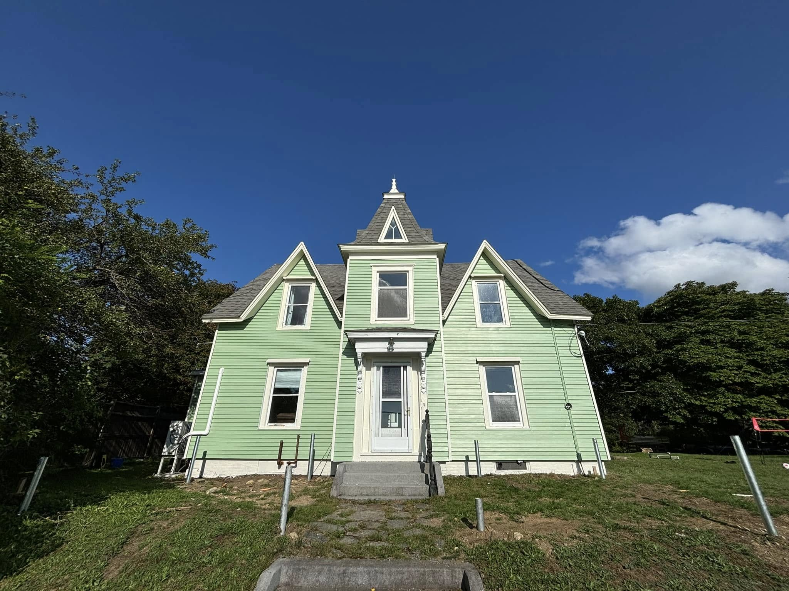
Comprehensive painting services for every part of your home, inside and out.
Individual rooms or whole-home interior repaints. Smooth, even finishes in the colours you love, with precise cutting-in and clean lines.
Weather-resistant exterior painting for clapboard, vinyl, wood, and composite siding. Including trim, fascia, soffits, and shutters.
Refresh interior doors, kitchen cabinets, bathroom vanities, and built-in shelving with smooth brush, roller, or spray finishes.
Protect and beautify your outdoor living spaces. We apply premium stains and sealers that stand up to Nova Scotia's weather.
Not sure which colours to choose? Our team can help you select the perfect palette for your space, considering light, style, and personal taste.
Complete wallpaper stripping, surface repair, and priming to prepare walls for a fresh, modern painted finish.
See the transformations we've delivered for homeowners across the South Shore.
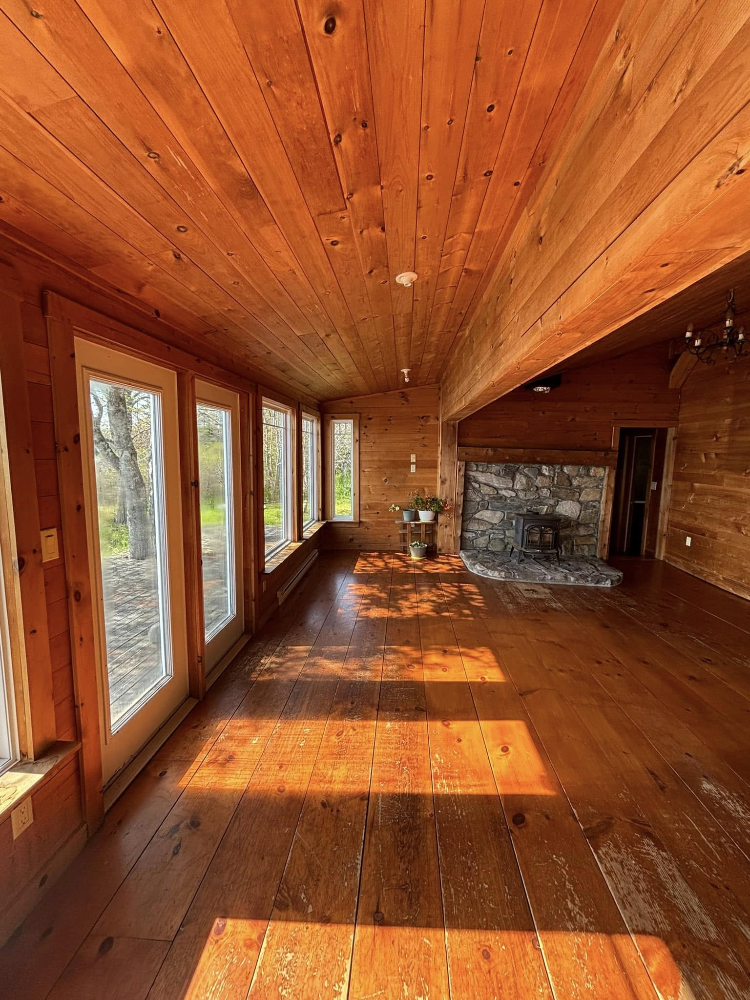
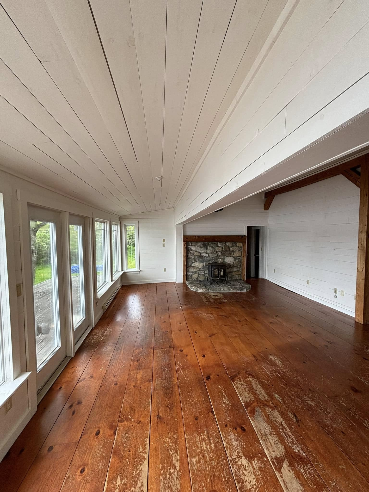
A knotty-pine sunroom transformed with a soft white finish on the walls and ceiling, opening up the space while keeping its warm wood floor.
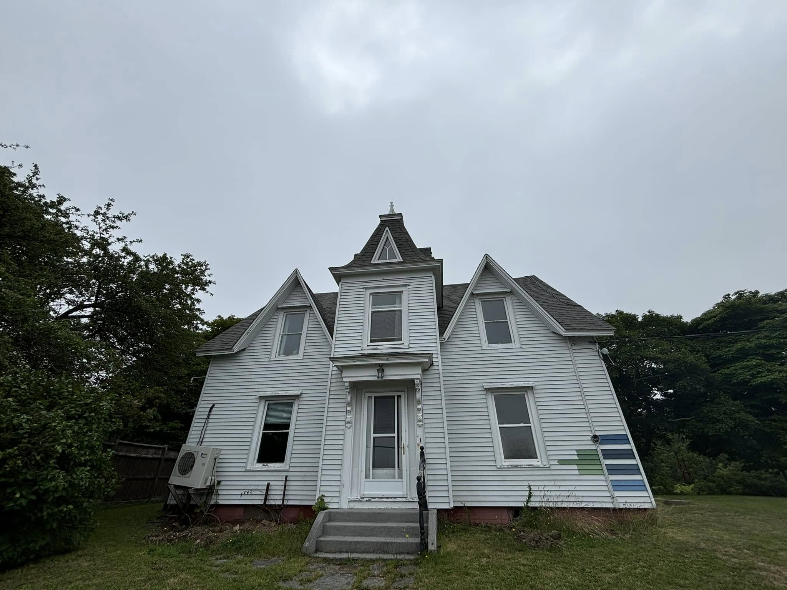

A classic Gothic-Revival farmhouse repainted in a fresh sage green with clean cream trim, restoring its character and curb appeal.
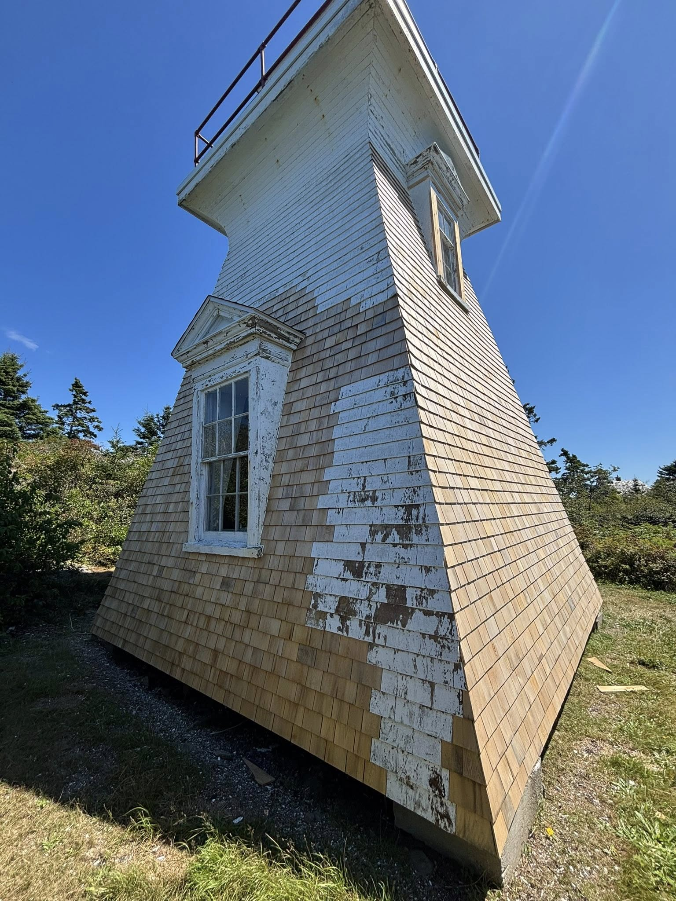
Weathered cedar shingles and peeling paint on a heritage tower given a crisp, uniform painted finish built to stand up to the coast.
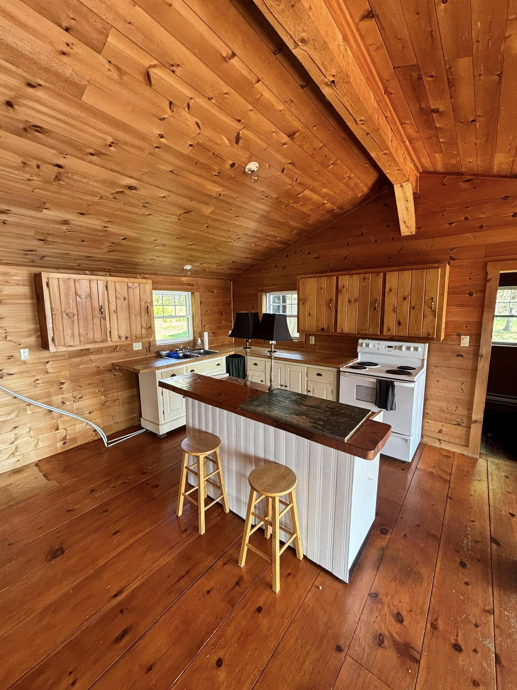
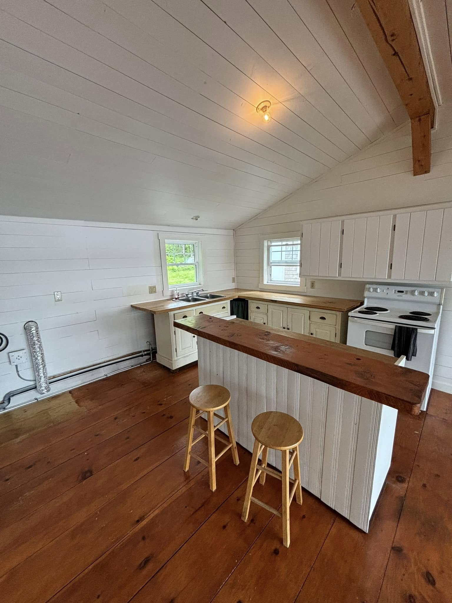
A pine-clad cottage interior painted bright white on the walls and ceiling, opening up the space while keeping the warm wood floors and live-edge island.
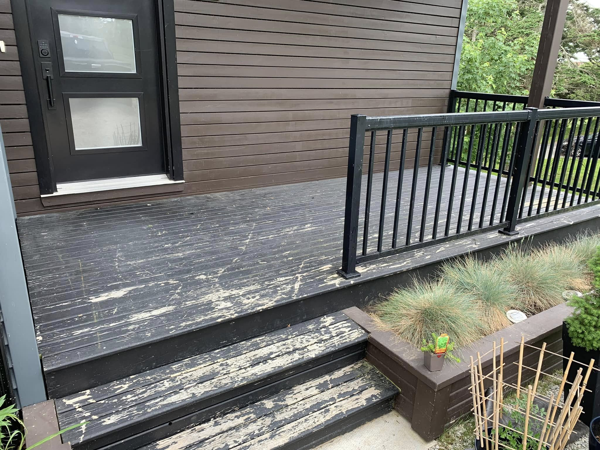
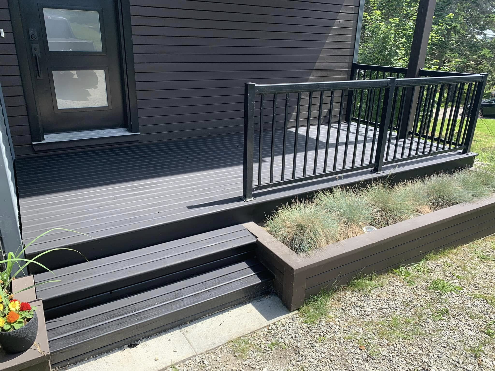
A weathered deck stripped of its peeling stain and re-coated in a rich charcoal finish for a clean, durable surface that stands up to the elements.
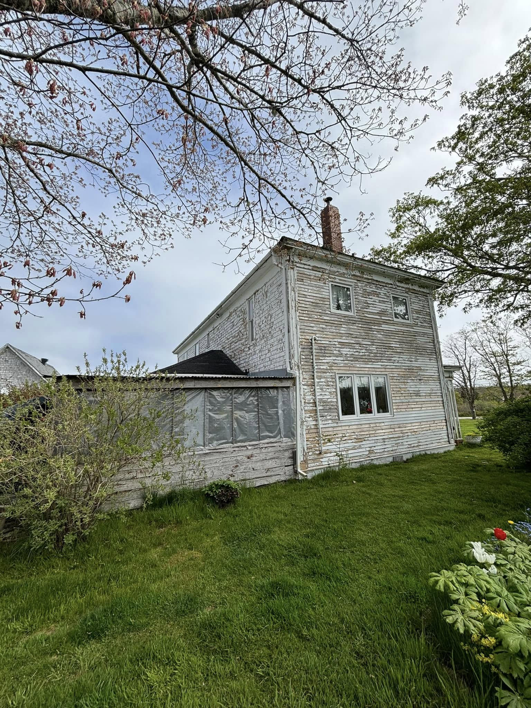
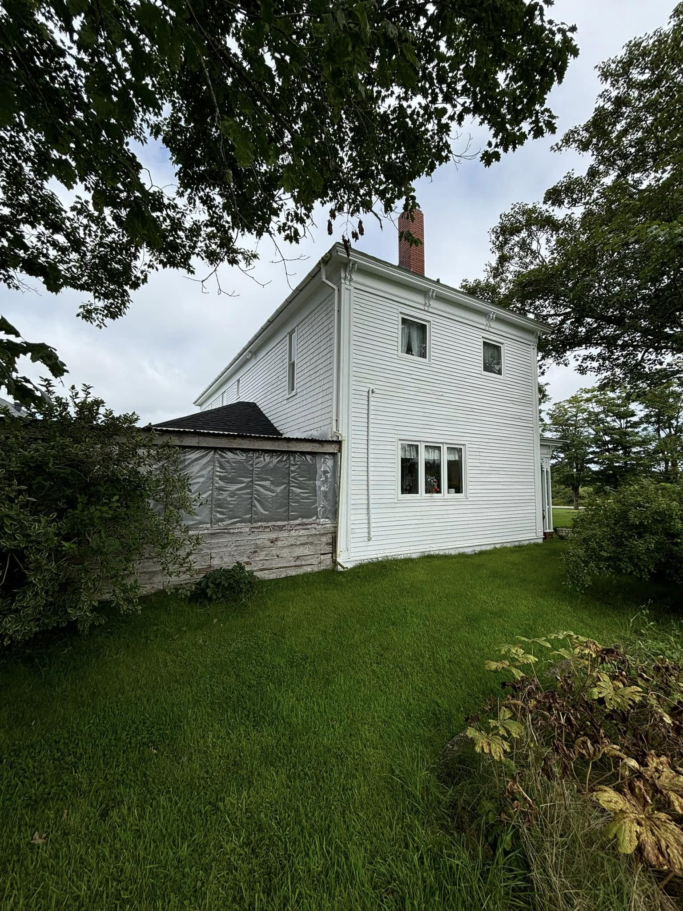
A two-storey home with heavily weathered, peeling clapboard stripped back and repainted in a clean, protective white that restores its classic character.
A careful, respectful approach that protects your home and delivers beautiful results.
We visit your home to discuss your vision, evaluate the surfaces, and understand exactly what you're looking for. We'll talk through colours, finishes, and any concerns you may have.
You'll receive a detailed, written quote covering all labour and materials. No hidden fees, no surprises. We'll agree on a timeline that works for your family's schedule.
Before any paint is opened, we carefully protect your furniture, floors, and fixtures. Surfaces are cleaned, sanded, patched, and primed — because great prep means a great finish.
Our trained technicians apply your chosen colours with precision, using the right technique for each surface. We take our time on edges, corners, and details that make the difference.
Once complete, we walk through the finished spaces with you to make sure you're delighted. We clean up thoroughly — your home is left looking better than when we arrived.